Speicherlandschaft
Der Teil des C 64, dem er seinen Namen verdankt, ist sein 64 KByte großer Arbeitsspeicher. Doch was heißt das eigentlich? Und wie ist dieser ganze Speicher aufgebaut? In Form eines kleinen Kurses möchten wir diese und ähnliche Fragen klären, und Sie mit dem Innenleben Ihres Computers vertraut machen.
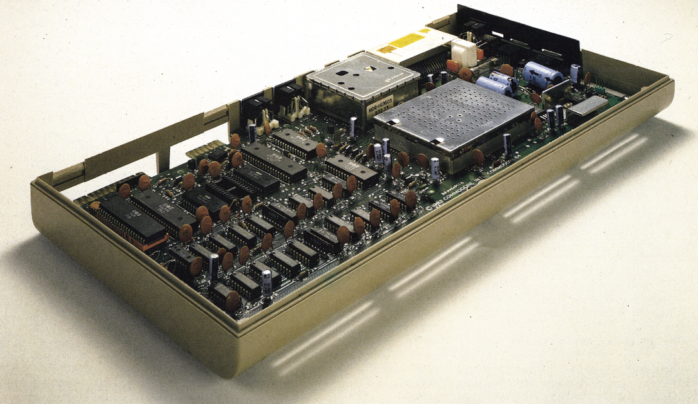
Ist es Ihnen auch so ergangen? Irgendwann stand der Commodore 64 in Ihrem Zimmer und verlangte nach Programmen. Doch woher? Software kaufen, das ist teuer; selber schreiben, dazu muß man das System kennen. Was ist denn das: ROM, CPU...?
In diesem Kurs wollen wir versuchen, Ihnen das Innenleben Ihres Commodore offenzulegen. Alle Fachausdrücke, die dabei eine Rolle spielen, sollen erklärt werden. Nach der Lektüre werden Sie in der Lage sein, weitergehende Literatur (falls Sie Blut geleckt haben) zu lesen und zu verstehen. Aber auch, wenn Sie sich auf diesen Kurs beschränken, beherrschen Sie Ihren Computer viel besser als vorher.
CPU kommt von »Central Processing Unit«, was soviel heißt wie »zentrale Arbeitseinheit«. Manche nennen sie auch liebevoll »Mikroprozessor«. Aber alle meinen damit den Verkehrspolizisten in unserem Computer, der im C 64 den Namen 6510 trägt.
Ein emsiges schnellebiges Treiben findet hier statt: Daten gehen in Windeseile ein, werden bearbeitet und Antworten werden abgesandt bis an die entferntesten Adressen des C 64. Dazu gibt es Registraturen, Rechenwerke, Sammelstellen, Verwaltungen, Nachrichtennetze und ein Büro, wo jemand sitzt und all das auch noch mitzählt. Und das im rasenden Tempo. Da geht's wirklich heiß her und es wird Sie nicht verwundern, zu hören, daß manche große Computer mit noch rascherem Arbeitstempo nur noch im kühlenden Bad mit flüssigem Helium arbeiten können.
Unserer CPU sieht man das alles gar nicht an. Wie ein glatter, rechteckiger schwarzer Käfer mit vielen Beinchen sieht sie aus. Erst wenn man ihr die Schale abnimmt und sie mit einem starken Mikroskop betrachtet, erkennt man schemenhaft die Struktur all dieser Einrichtungen. Die CPU versteht uns übrigens gar nicht, wenn wir mit ihr Basic sprechen. Alles muß ihr erst noch in eine spezielle Sprache übersetzt werden, die nur aus Nullen und Einsen besteht, in das sogenannte Binärsystem. Wenn man allerdings in dieser oder einer ihr sehr nahen Sprache mit der CPU zu sprechen versteht, dann erlebt man plötzlich einen Abglanz dieser wahnwitzigen Arbeitsgeschwindigkeit. Man nennt das dann in »Assembler« programmieren, genauer gesagt, in 6502-Assembler (denn 6502 ist ein naher Verwandter unserer 6510).
ROM und RAM
Bei dem Begriff ROM handelt es sich – wie so häufig – um die Abkürzung eines englischen Ausdrucks: »Read Only Memory«. Das heißt zu deutsch »Nur Lese-Speicher« und ist die Bibliothek im Computer. In diesen Speicherbereich kann nichts hineingeschrieben werden. So liegt zum Beispiel an der Adresse 65383 in unserem Commodore 64 das Betriebssystem-ROM. Wenn Sie mal mit dem Befehl »PRINT PEEK (65383)« nachsehen, was an dieser Adresse steht, dann finden Sie eine 1. Nun versuchen Sie mal, etwas dort hineinzuschreiben, beispielsweise mit »POKE 65383,255«.
Im Normalfall würde man bei einem erneuten »PRINT PEEK(65383)« die Zahl 255 erwarten. Hier aber findet man konstant die 1. ROM-Inhalte haben nämlich die angenehme Eigenschaft, immer vorhanden zu sein, auch nach dem Abschalten des Stroms. Deswegen sind alle »lebenswichtigen« Funktionen unseres Computers darin fest einprogrammiert.
Im ROM befindet sich also das Betriebssystem. Es besitzt beispielsweise eine Routine, die 60mal in der Sekunde abfragt, ob wir eine Taste gedrückt haben. Ebenfalls im ROM (aber an einer anderen Stelle) ist der Übersetzer, der unserer CPU sagt, was ein Basic-Befehl in der speziellen Binärsprache bedeutet. Diesen nennt man Interpreter. Daß Sie ein »A« auf dem Bildschirm sehen, wenn Sie eines eintippen, verdanken Sie dem Zeichen-ROM, in dem alle Buchstaben, Zahlen, Grafikzeichen und so weiter als von der CPU abrufbare Muster hinterlegt sind.
Eine andere Sorte von Speicher im Computer ist das RAM. Auch dies ist wieder eine Abkürzung eines englischen Ausdrucks (»Random Access Memory«), das heißt »Speicher mit beliebigem Zugriff«. Man kann aus diesem Speicher lesen und man kann hineinschreiben. Das RAM enthält nur flüchtige Informationen. Wenn der Computer ausgeschaltet wird, ist es wie das Auswischen der Schrift auf einer Tafel. Der Speicherinhalt ist weg. Wo finden wir das RAM im C 64? Grob gesagt, überall dort im Speicher, wo kein ROM ist. Das RAM ist der Bereich, wo wir uns als Benutzer austoben können. Alle Basic-Programme, Variablen, Felder und Strings schreiben wir ins RAM. Von Diskette oder Kassette laden wir ins RAM, ja selbst der Inhalt dessen, was auf dem Bildschirm zu sehen ist, ist RAM-Inhalt. Bestimmt haben Sie das schon bemerkt, wenn Sie durch POKE-Kommandos auf den Bildschirm geschrieben haben. Die Befehle »POKE 1024,1: POKE 55296,0« erzeugen zum Beispiel ein schwarzes »A«, weil in die erste RAM-Speicherstelle des Bildschirms der Code für A und in die erste Bildschirm-Farbspeicherstelle der Code für die Farbe Schwarz geschrieben wird. Aber nicht nur wir als Benutzer benötigen das RAM. Auch unser Computer hat viel Bedarf daran. Jede Tätigkeit erfordert von ihm das Ablegen von Notizen, zum Beispiel für irgendwelche Zwischenergebnisse oder Adressen. Deswegen ist ein großer Teil des RAM unserem normalen Zugriff entzogen. Lediglich durch POKE-Kommandos können wir der CPU dort ihre »Alleinherrschaft« streitig machen. Dafür haben wir allerdings dann auch die Folgen zu tragen.
Wir wollen uns später noch genau mit diesen ganzen Details befassen. Wie das ROM und das reservierte RAM aussieht, soll Ihnen ein kurzes Programm zeigen, das als Listing 1 abgedruckt ist:
Tippen Sie es ein (dabei dürfen Sie die REM-Zeilen weglassen) und starten Sie mit »RUN«. Zunächst wird der Bildschirm leer, um dann anzukündigen, daß jetzt der Inhalt des ROM gezeigt wird. Sobald die Schrift schwarz wird, schaltet unser Computer den ROM-Inhalt auf den Bildschirm. Jedes Zeichen, das Sie dort sehen, gehört zum Programm des Basic-Interpreters und ist für uns zunächst völlig unverständlich. Das liegt daran, daß wir auf dem Bildschirm die Binärsprache der CPU als Bildschirmcode (POKE-Code) dargestellt sehen. Und das sind eben irgendwelche Zeichen mit Codes zwischen 0 und 255. Sehen Sie genau hin, dann stellen Sie fest, daß – nachdem das Bild fertig ist – keinerlei Veränderung mehr zu erkennen ist. Das ist eben das Merkmal von ROM-Inhalten. Sie bleiben, wo und wie sie sind.
Das Bild bleibt so stehen, bis Sie eine Taste drücken (bitte nicht die RUN/STOP-Taste). Danach meldet sich wieder der normale Bildschirm mit der Ankündigung, daß als nächstes der vom Computer reservierte RAM gezeigt wird. Das geschieht nach einer kurzen Zeitspanne. Da ist jetzt ordentlich was los auf dem Bildschirm! Das Flackern an einigen Stellen zeigt, daß die CPU dort gerade Eintragungen verändert.
Hoffentlich entschädigt Sie dieser Einblick in sonst verborgene Bereiche unseres C 64 dafür, daß Sie vom Programm noch kaum etwas verstehen. Seien Sie jedoch unbesorgt, im Verlauf dieses Kurses wird sich das noch ändern. Vorerst aber achten Sie darauf, daß wirklich alle Programmzeilen fehlerfrei eingegeben werden. Eine falsche Zahl könnte den Computer zum Absturz bewegen, aus dem nur noch das Aus- und wieder Einschalten rettet. Deshalb (das sollte man ohnehin immer machen): Vor dem RUN speichern.
Wir werden uns nun nach und nach soweit vorarbeiten, daß wir verstehen, was im Speicher enthalten ist.
Bits und Bytes, was sind das?
Ein Computer ist ein elektrisches Gerät. Wie alle solche Geräte kennt er zwei Zustände: Strom an und Strom aus. Jedes seiner Teile arbeitet mehr oder weniger nach diesem Prinzip. Elektrische (oder magnetische Ladung) ist vorhanden oder ist nicht vorhanden. Dazwischen gibt es nichts. Man kann einen Schalter nicht halb anschalten. Den Zustand »kein Strom« (oder keine Ladung) bezeichnet man mit Null, den anderen »Strom an« (oder Ladung vorhanden) mit Eins. Dieses nennt man die kleinste Informationseinheit oder auch »Bit«. Das Wort kommt von »binary digit«, was soviel heißt wie »binäre Ziffer«.
Für ein Bit gibt es also zwei Zustände (0 oder 1). Nehmen wir nun mal zwei Bit, dann sehen wir folgende Kombinations-Möglichkeiten:
| 00 | 1. Kombination |
| 01 | 2. Kombination |
| 10 | 3. Kombination |
| 11 | 4. Kombination |
Das sind dann 22 = 4 Zustandskombinationen. Damit lassen
| 3 Bit | 23 = 8 Varianten |
| 4 Bit | 24 = 16 |
| 5 Bit | 25 = 32 |
| 6 Bit | 26 = 64 |
| 7 Bit | 27 = 128 und |
| 8 Bit | 28 = 256 |
Kombinationen zu.
Nach bestimmten Rechenregeln kann man jeder Bit-Zusammenstellung auch eine Zahl zuordnen. Die zu so einer Zahl gehörende Bit-Kombination nennt man Binärzahl.
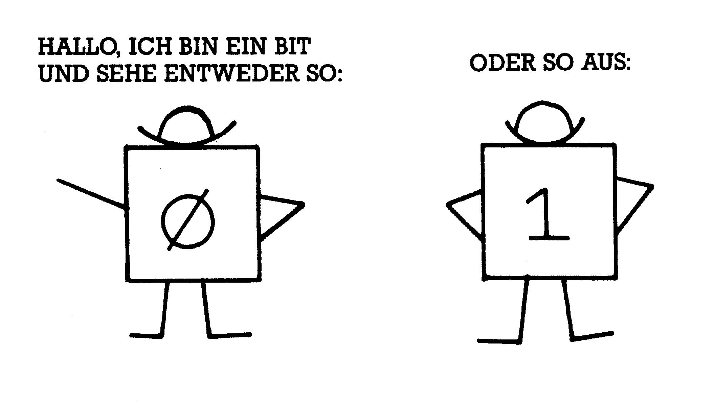
Um das Ganze übersichtlicher zu gestalten, geben wir einigen Gruppen von Bits (egal, welche Zustände bei ihnen herrschen, also ob sie nun 0 oder 1 enthalten) auch Namen. Eine Gruppe von vier Bit wird meistens ein Nibble genannt. Zwei solcher Nibbles oder acht Bit werden zusammengefaßt unter dem Begriff Byte. Da haben wir es also, das Byte.
Weiter oben haben wir festgestellt, daß man acht Bit zu 256 verschiedenen Kombinationen zusammenstellen kann. Jede Kombination entspricht einer Zahl. Deswegen kann ein Byte 256 verschiedene Zahlen enthalten, nämlich 0 bis 255. Alles, was wir durch POKE-Kommandos eingeben, geht in ein Byte (deswegen meldet der Computer einen »ILLEGAL QUANTITY ERROR«, wenn wir andere Zahlen als solche zwischen 0 und 255 einzuPOKEn versuchen) und alles, was wir durch PEEK erhalten können, ist ebenfalls der Inhalt eines Byte. Glücklicherweise übernimmt auch hier der Interpreter die Übersetzung in das System der Binärzahlen und umgekehrt.
In unseren Computer passen genau (ohne die ROM-Bausteine) 65536 solche Bytes hinein. Das sind schon wieder unüberschaubar viele, weswegen man auch hier einige Einteilungen vornimmt.
Pages und »Kilo«-Bytes, so viele Fremdwörter
»Kilo«-Byte sind eigentlich keine solchen. Kilo, abgekürzt »k«, steht immer für 1000 mal etwas. Also 1 km sind 1000 mal 1 Meter, 1 kg sind 1000 Gramm und so weiter. Bei den so beliebten »Kilobyte« ist das anders: So nennen nämlich viele in der Computer-Umgangssprache eine Menge von 210 Bytes. Und 210 sind 1024. Deswegen kürzt man diesen Begriff auch nicht mit dem kleinen »k«, sondern mit dem großen »K« ab. Und deswegen ist der Ausdruck »Kilobyte« falsch. Exakt spricht man es »Ka-Byte« aus. Nochmal also: 1000 Byte = 1 kByte (»Kilobyte«), aber 1024 Byte = 1 KByte (»Ka-Byte«).
Und wenn Sie nun mal 65536 durch 1024 teilen, dann sehen Sie, daß in unseren Computer 64 KByte hineinpassen. Deswegen heißt er auch Commodore 64. Wenn jemand sagt, ein Programm sei 28 K lang, dann sollte er wissen, daß er eigentlich meint, es sei 28 KByte lang, was 28 x 1024 = 28672 Byte entspricht oder aber 28,672 kByte.
1024 Byte sind immer noch etwas unhandlich. Wenn wir diese Menge durch 4 teilen, dann erhalten wir 256 Byte. Genau diese Anzahl bildet eine »Page«, was von dem englischen Wort für »Seite« (wie eine Buchseite) herrührt. Page ist allerdings weniger die Bezeichnung für genau 256 Byte (sagt man aber auch manchmal), sondern ein Ordnungsprinzip wird damit ausgedrückt. Wenn man nämlich alle Bytes im Computer durchnumeriert (von 0 bis 65535) und dabei immer so zählt, daß jeweils 256 davon eine Page bilden, dann erhält man 256 Pages zu je 256 Byte. 256 x 256 ergibt dann wieder 65 536. Diese Pages tragen dann – wie in einem Buch – Seitenzahlen, und mit Page 0 (Adressen 0 bis 255), der sogenannten »Zero«-Page, fängt unser Computer an.
Diese Zeropage ist einer von den RAM-Bereichen, die der Computer für seine Notizen reserviert hat. Das obere Viertel unseres Bildschirmes hat diese Page vorhin beim Listing 1 wiedergegeben und ein Zeichen dabei entsprach genau einem Byte.
Beim Wort Vektor denken vielleicht einige von Ihnen mit mehr oder weniger leichtem Schaudern an den Mathematik- oder Physik-Unterricht in der Schule. Damit hat der Vektor, den wir im Computer finden, aber wenig gemein.
Im Abschnitt über die CPU haben wir gesehen, daß dort Daten eingehen, verarbeitet und schließlich bis in die entferntesten RAM-Bereiche unseres Computers gesandt werden. Außerdem wissen wir (oder Sie haben das jedenfalls inzwischen sicher bemerkt), daß das Byte genau der »Happen« ist, der dem Computer – also auch der CPU – mundgerecht verabreicht werden kann (beispielsweise in POKE-Befehlen). Drittens – und jetzt kommt das Problem – gibt es 65 536 Byte im C 64. Die CPU muß oft Daten an eine Speicherzelle senden, deren Adresse höher ist als 255 (also das Maximum, das mit einem Byte darstellbar ist). Weil aber ein 256-Byte-Computer (0,25 KByte) doch ein wenig kläglich wäre, hat man sich da etwas einfallen lassen. Die Adressen werden in zwei Bytes aufgeteilt und einzeln gelesen. Durch eine bestimmte Technik des Assembler-Programms werden sie zu einer Zahl größer als 256 verkoppelt. Erinnern Sie sich noch daran, daß mit acht Bit (also 1 Byte) 28 = 256 Kombinationen erreichbar waren? 2 Byte – also 16 Bit – sind dann demzufolge 216 Kombinationen, was exakt 65536 Möglichkeiten eröffnet.
Wie kann man nun herausfinden, wie beispielsweise die Zahl 50000 in 2 Byte zerlegt wird, so daß der Computer sie richtig verwendet? Natürlich haben auch diese 2 Byte wieder Namen. Das eine heißt MSB und das andere LSB. SB kommt dabei immer von »Significant Byte«, was soviel bedeutet wie »wichtiges Byte«. »M« steht für »Most«, also »am meisten« und »L« ist die Abkürzung für »Least«, also »am wenigsten«. Wir haben also ein höherwertiges und ein niederwertiges Byte.
Das MSB gibt die Pagenummer der Adresse an. Man erhält diese Nummer durch Teilen der Adresse mit 256 und Weglassen des Restes. Nehmen wir zum Beispiel die Zahl 50000, dann rechnet man:
MSB = 50000/256 = 195 Rest 80
Dieser Rest ist das LSB. 50 000 ist dann das 80. Byte auf Page 195. Allgemein kann man sowas ja seinen Computer rechnen lassen. Wenn also die Zahl Z in ein MSB und ein LSB aufgespalten werden soll, erreicht man das mit dieser Programmzeile: »MSB=INT(Z/256):LSB=Z-256*MSB«
Anders herum: Wenn eine Zahl als MSB und LSB vorliegt, kann man sie so berechnen:
Z=256 * MSB + LSB
Wozu das alles? Solche Byte-Paare nennt man Vektoren und die werden vom Computer im RAM gespeichert. Und wenn etwas im RAM steht, kann man es durch POKE-Befehle ändern, vorausgesetzt man weiß, wie so ein Vektor umgerechnet werden muß.
In solchen Vektoren sind allerhand wichtige und interessante Dinge zu finden. Im weiteren Verlauf dieses Kurses werden wir uns damit noch beschäftigen. Man kann zum Beispiel durch Umschreiben eines Vektors Speicherbereiche schützen und vieles mehr.
Die Helfer der CPU
Auch die tüchtigste Zentrale – wie unser Mikroprozessor 6510 – ist ohne die wirkungsvolle Mitarbeit weiterer Organe hilflos. Das können Sie leicht feststellen, wenn Sie diese alle abschalten. Wir haben dann nur noch die CPU und 64 KByte RAM vor uns. Bevor Sie aber den dazu nötigen Befehl »POKE1,PEEK(1)AND248« eingeben, sollten Sie alle Daten und Programme auf Kassette oder Diskette speichern, denn danach ist unser Computer scheintot, und nur noch durch Aus- und wieder Einschalten erwecken wir ihn zum gewohnten Leben.
Was macht uns den Verkehr mit unserem Computer überhaupt erst möglich? Weiter oben haben wir einiges davon schon erwähnt. Als 8 KByte umfassenden Baustein haben wir da zunächst den Basic-Interpreter, der alle unsere Wünsche, die wir in Basic dem Computer mitteilen, in die der CPU allein verständliche Sprache aus Nullen und Einsen übersetzt. Es handelt sich dabei um ein ROM, in dem ein Programm in Maschinensprache unveränderbar gespeichert ist. Man nennt sowas auch Firmware, weil es Software ist, die vom Hersteller fest installiert wurde.
Zur Begriffserklärung: Hardware ist alles, was man – vereinfacht ausgedrückt – am Computer anfassen kann, Chips, Platinen und so weiter. Software nennt man die Programme.
Harte Sache
Ein zweiter, ebenfalls 8 KByte umfassender ROM-Baustein enthält das Betriebssystem unseres Commodore, Kernel genannt. Auch hier handelt es sich um Firmware und eine ihrer Aufgaben, nämlich die Abfrage der Tastatur, haben wir weiter oben schon erwähnt. Andere sind beispielsweise die Organisation der Datenübergabe an die Datasette oder den Bildschirm, das Weiterstellen der internen Uhren, das Initialisieren nach dem Einschalten und vieles mehr.
An weiterer Firmware finden wir in unserem C 64 das Zeichen-ROM, welches, auf 4 KByte verteilt, alle Zeichen, die unser Computer darstellen kann, als Muster enthält. Aus diesem Speicher werden dann beispielsweise Buchstaben durch ein im Betriebssystem enthaltenes Programm herauskopiert und an eine festgelegte Bildschirmadresse übertragen.
Zur Ausführung einer solchen Übertragung bedarf es nicht nur der Programme beziehungsweise der Daten, die wir in den drei beschriebenen Bausteinen als Firmware kennengelernt haben, sondern auch bestimmter Instrumente, die alle damit zusammenhängenden Anweisungen in die Tat umsetzen. Das geschieht im Commodore 64 durch vier Bausteine: CIA 1, CIA 2, SID und VIC-II-Chip.
Fangen wir mit dem letzten an: VIC (so heißt übrigens im englischen Sprachraum der VC 20, was auf die Bedeutung dieses Bausteins hinweist) kommt von »Video Interface Controller«. Dieser Baustein regelt den Verkehr unseres Computers mit dem Bildschirm. Er beansprucht genau 1 KByte an Speicherplatz und verfügt über 47 Register, deren Inhalte seine Tätigkeit steuern. Für alle, die grafische Datenverarbeitung betreiben möchten, ist dieser Chip der Schlüssel dazu.
SID ist die Abkürzung von »Sound Interface Device«. Der akustische Verkehr mit der Außenwelt wird durch diesen ebenfalls 1 KByte großen Baustein gemanaget. 29 Register erlauben hier die Funktionssteuerung, die den Commodore 64 zum Synthesizer oder – mit einigen Tricks – zum Sprachausgabegerät ummodelt.
CIA steht für »Complex Interface Adapter«. CIA 1 und CIA 2 sind zwei identische Bausteine, die aber unterschiedliche Aufgaben zu erfüllen haben. Beide beanspruchen je 256 Byte Speicherplatz und sind über ihre 16 Register zu beeinflussen. Sie führen vor allem die Ein- und Ausgabeoperationen aus. Dabei ist der CIA 1 zuständig für Tastatur, Joystick, Lichtgriffel und Paddles, während sich der CIA 2 um den User-Port, die RS232C-Schnittstelle, den seriellen Ausgang und die interne Speicherstruktur zu kümmern hat. Beide haben außerdem Uhrenfunktionen und regeln das sogenannte Interrupthandling (dazu kommen wir später).
Stellen wir also fest, daß alle diese Helfer unserer CPU insgesamt 22,5 KByte Speicherplatz belegen. Dazu kommen noch 1 KByte Bildschirmfarbspeicher und 0,5 KByte, die von Commodore für Erweiterungen freigehalten werden. Wenn Sie den C 64 einschalten, dann meldet er sich unter anderem mit »64 K RAM SYSTEM«. Da kann aber doch etwas nicht stimmen, werden Sie sagen, wenn Sie bis hierher aufmerksam mitgelesen haben. Etwas weiter oben haben wir festgestellt, daß unsere Zentraleinheit Zugriff zu allen – auch den entferntesten – Adressen hat. Dazu verwendet sie den Trick mit dem Aufteilen einer »Anschrift« auf zwei Byte und konnte so exakt 65536 Adressaten erreichen, also 64 KByte. Nach Adam Riese summieren sich aber 64 KByte RAM und (etwas vereinfacht) 22,5 KByte ROM zu insgesamt 86,5 KByte Speicherraum, den es zu adressieren gilt. Das ist mittels 2 Byte Anschriftentext aber nicht möglich. Diesen scheinbaren Widerspruch werden wir gleich auflösen. Dazu müssen wir aber unseren Speicher noch etwas genauer untersuchen.
Die Speicherstadt
Stellen Sie sich eine lange Straße vor mit 65536 aneinandergereihten Häusern (von Hausnummer 0 bis Hausnummer 65535, wie in Bild 1).
Dies entspricht unserem Speicher. Jedes Haus (Byte) ist ebenerdig und hat acht Zimmer (Bits). Wie eine Stadt in Stadtteile unterteilt ist, finden wir in dieser Speicherstadt die Einteilung in Pages. Ähnlich wie es in Städten ein Handwerkerviertel und ein Geschäftsviertel und so weiter gibt, sind auch hier manchen Pages spezielle Aufgaben zugeteilt. Die wichtigste davon ist die Zeropage, auf der sich die CPU beziehungsweise das Betriebssystem Notizen machen. Auch die Pages 1 bis 3 (also bis Adresse 1023) dienen ähnlichen Zwecken. Ab Page 4 bis inklusive Page 7 liegt der Bildschirmspeicher unseres Computers. Er entspricht genau dem, was auf dem Fernsehbild zu sehen ist. Jedes Zeichen wird dabei durch einen POKE-Code vertreten. Die Zuordnung der einzelnen Adressen zu den Bildschirmpositionen kann man aus dem Handbuch (Seite 138) entnehmen, ebenso wie die POKE-Codes (Seite 133). Packen wir also in Adresse 1024 eine 1 hinein durch »POKE 1024,1«, dann erscheint in der linken oberen Bildschirmecke ein »A«. Bei Ihnen erscheint kein »A«? Dann fahren Sie mal mit dem Cursor an die Stelle und Sie erkennen den Buchstaben. Den Commodore 64 gibt es momentan mit mindestens zwei verschiedenen Versionen des Betriebssystems. Bei der älteren muß man außer dem Bildschirmcode in den Bildschirmspeicher auch noch einen Farbcode in die entsprechende Bildschirmfarbspeicherstelle geben. Diese kann man ebenfalls dem Handbuch entnehmen (Seite 139). Hier braucht man also noch den Befehl »POKE 55296,1«, um ein weißes »A« zu erzeugen. Die neuere Version macht den Farbcode-POKE überflüssig. Nur wenn wir eine andere Farbe als die vorgegebene möchten, müssen wir den neuen Farbcode in den Bildschirmspeicher POKEn.
Der Bildschirmspeicher erfordert genau 25 * 40 = 1000 Byte. Von den 1024 Byte (4 Pages) sind also noch 24 Byte frei, die teilweise Verwendung finden als Sprite-Zeiger. Doch dazu kommen wir erst später. Ab Page 8 (Adresse 2048) haben wir volle Verfügungsgewalt über den Speicher für Basic-Programme und Daten.
Etwas Neues passiert ab Adresse 40960, dem Ende unseres Basic-Speichers. Von dieser »Hausnummer« an, bis 49151, haben die Gebäude der Speicherstadt eine zusätzliche erste Etage. Zu ebener Erde liegt weiterhin RAM vor, im ersten Stock aber ROM, und zwar der 8 KByte große Basic-Interpreter (siehe Bild 2).
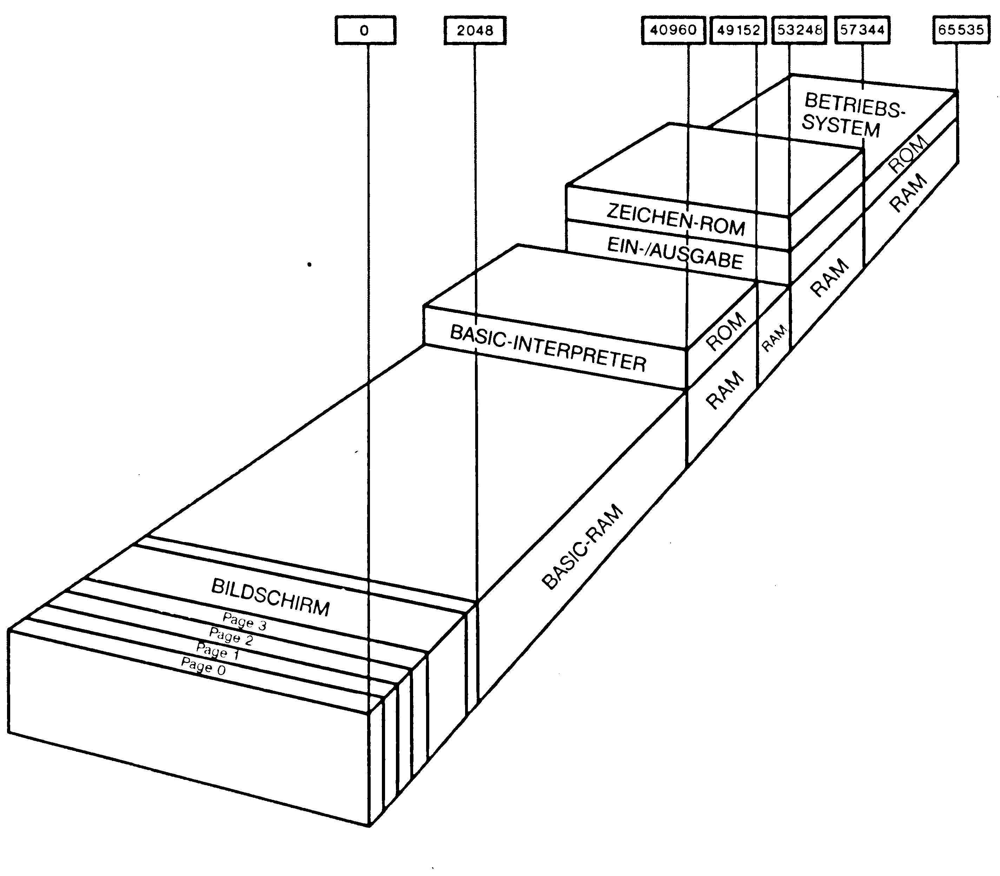
In den nächsten 4 KByte finden wir wieder nur RAM. Dieser Bereich von 49152 bis 53247 wird häufig für Maschinenprogramme genutzt, weil hier nicht die Gefahr des unabsichtlichen Überschreibens durch Basic-Programme besteht. Ab 53248 sind die »Byte-Häuser« sogar mit zwei Etagen versehen. Im Erdgeschoß liegt weiterhin RAM, in der ersten Etage sind die Ein- und Ausgabe-Bausteine angesiedelt und oben im zweiten Stockwerk breitet sich das Zeichen-ROM aus. Die Belegung im ersten Geschoß durch die Ein- und Ausgabe-Bausteine ist in Bild 3 zu sehen.
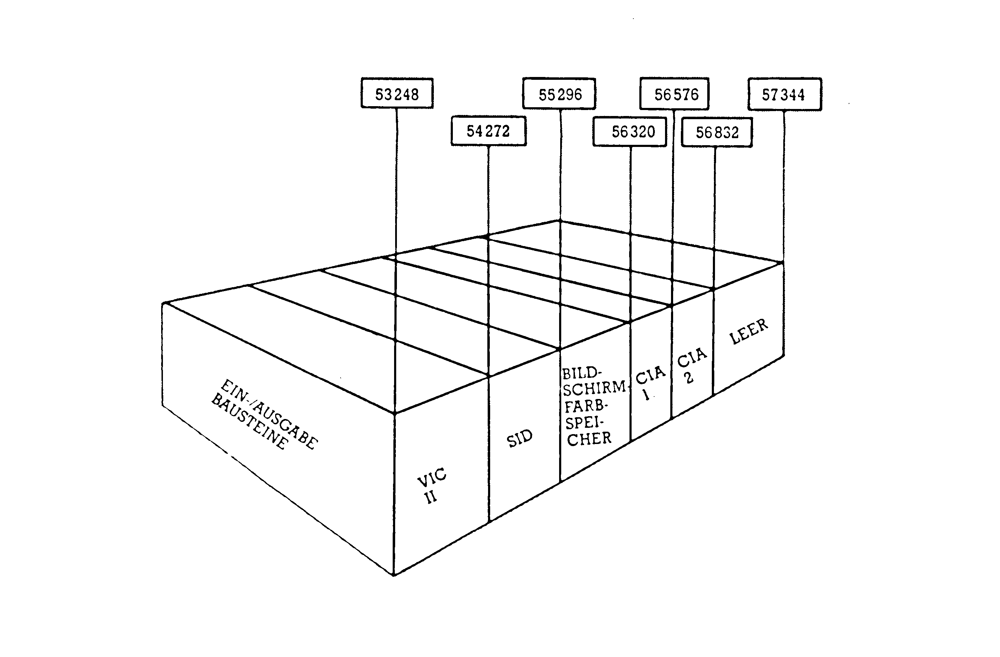
Dabei belegt der VIC-II-Chip die Adressen von 53248 bis 54271, der SID-Chip die von 54272 bis 55295, der Bildschirmfarbspeicher die von 55296 bis 56319, der CIA 1 liegt von 56320 bis 56575, der CIA 2 von 56576 bis 56831 und der Bereich von 56832 bis 57343 ist leer. Ab Adresse 57344 bis zum Speicherende haben wir es dann wieder mit einstöckigen »Byte-Häusern« zu tun, in deren Erdgeschoß RAM und in der ersten Etage das Betriebssystem-ROM wohnt.
Jetzt können wir an die Lösung des Rätsels gehen, wieso unsere CPU anscheinend mehr als 64 KByte an Hausnummern adressieren kann. Wie Sie bei der Wanderung durch die Speicherstadt bemerkt haben werden, sind es ja nur 65536 Häuser, die zu adressieren sind. Die Frage ist jetzt nur noch, woher die CPU weiß, in welche Etage bei den mehrstöckigen Byte-Gebäuden eine Nachricht gelangen soll, beziehungsweise aus welcher Etage eine Meldung zu holen ist. Dazu verwendet unser Computer die Speicherstelle 1. In drei von den acht Bit-Zimmern dieses Byte-Hauses liegt die Information, welche Etage in welchen Speicherbereich gerade zugänglich ist. Es gibt für drei Bit (Bit 0 bis 2) ja 23 = 8 Kombinationsmöglichkeiten. In Bild 4 sehen Sie die Auswirkung der verschiedenen Inhalte von Bit 0, 1 und 2 dieser Speicherstelle.
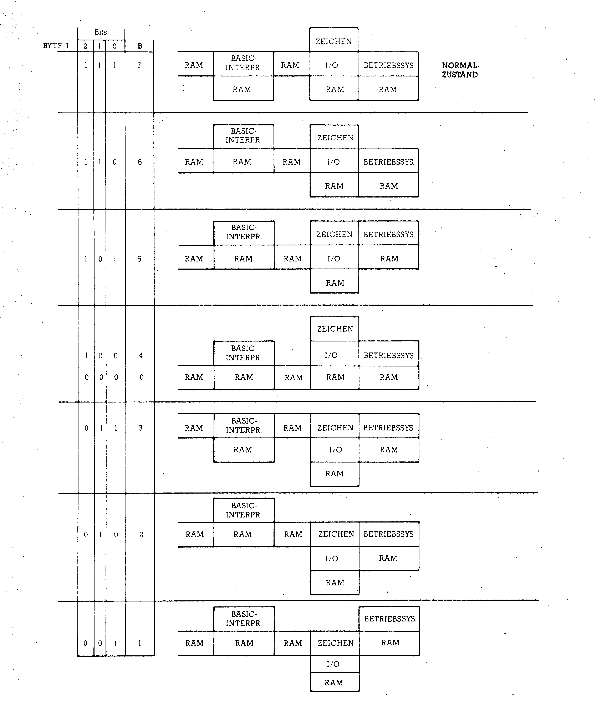
In Bild 4 ist auch jeweils der Dezimalwert der Bits 0 bis 2 angegeben (in Spalte B). Durch Eingabe des Basic-Befehles »POKE 1, (PEEK (1) AND 248) OR B«, wobei B dann den entsprechenden Wert annimmt, kann der Speicherzustand gesteuert werden. Allerdings gilt es dabei noch ein paar Feinheiten zu beachten, damit der Computer nicht abstürzt. Auch kann man diese veränderten Speicherkonstellationen nur selten von Basic aus sinnvoll nutzen. Die unterschiedliche Belegung der Speicherstelle 1 wird auch vom Betriebssystem wahrgenommen und dadurch ist unsere CPU in der Lage, festzustellen, welche Etage gerade für den Zugriff offensteht. Mit dieser Lösung des Rätsels sind wir schon mitten in der Zeropage (Adressen 0 bis 255) gelandet, die uns nun weiter beschäftigen soll.
Wenn Sie das Handbuch zum Commodore 64 auf Seite 160 aufschlagen, finden Sie eine Liste der Belegung der Zeropage und ab Seite 163 eine der Pages 1 bis 3. Deshalb soll hier nicht noch mal diese Tabelle abgedruckt werden. Außer einzelnen Werten und Vektoren finden sich hier sogar ganze Maschinenprogramme.
Wir werden hier nur diejenigen Adressen genauer untersuchen, die Verwendungsmöglichkeiten für uns im Rahmen von Basic bieten. Außer der schon behandelten Speicherstelle 1 sind die Adressen 43 bis 56 von sehr großem Interesse. Hier wird nämlich der Basic-Speicher organisiert. Zunächst soll uns nur der Vektor 43/44 beschäftigen. Um die anderen aus diesem Bereich zu verstehen, brauchen wir noch mehr Informationen über den Aufbau von Basic-Programmen im Speicher. 43/44 ist der Vektor, der auf den Anfang eines Basic-Programmes zeigt. Wenn Sie mit »PRINT PEEK (43), PEEK (44)« den Computer danach fragen, dann antwortet er im Normalfall mit den Angaben »1« und »8«. Das sind – in dieser Reihenfolge – das LSB und das MSB der Startadresse, und wenn Sie sich die Umrechnungsformel: Z = 256 * MSB + LSB zunutze machen, dann erhalten Sie: Z = 256 * 8 + 1 = 2049. Das ist eine Speicherstelle weiter, als die, die wir nach dem Durchgehen des gesamten Speichers erwartet hatten. In der Speicherstelle 2048 liegt eine Null, womit dem Interpreter der Anfang noch etwas deutlicher gemacht wird.
Wie wir weiter oben schon erwähnt haben, kann man solche Vektoren im RAM nicht nur lesen, sondern auch verändern. Das soll an einem Beispiel demonstriert werden: Nehmen wir an, unser Basic-Speicher-Anfang soll verlegt werden nach Speicherstelle 12288. Dann müssen wir zunächst die Null von 2048 nach 12288 verschieben, und zwar mit »POKE 12288,0«. Als nächstes berechnen wir das LSB und das MSB von 12289: MSB=INT (12289/256)=INT (48.003906) =48 und LSB=12289-256*48=1. Nun POKEn wir LSB und MSB des neuen Basic-Anfanges nach 43 und 44 (»POKE 43,1:Poke 44,48«). Damit zum einen der so definierte Speicherraum leergefegt wird und zum anderen auch einige andere Vektoren in die richtige Stellung kommen, wird abschließend noch NEW eingegeben (»NEW«).
Wozu benötigt man so etwas? Sehr häufig verwendet man Basic- und Maschinencode-Programme gemeinsam. Sei es, daß man nur eine kleine Routine – beispielsweise zum Sortieren – in Maschinensprache vom Basic-Programm her aufruft oder daß man ein Basic-Rahmenprogramm verwendet, um ein komplexes Maschinencode-Programm zu bedienen, immer braucht man einen geschützten Platz für das Maschinenprogramm. Zwar kennen Sie ja inzwischen den RAM-Bereich von 49152 an, der für viele solche Zwecke dient, aber genau darin liegt oft das Problem. Wenn Sie nun beispielsweise ein großes Assemblerprogramm in diesem oberen Speicherbereich ständig präsent haben wollen, dann muß die neue Assembler-Routine ein anderes Plätzchen finden. Ich lege sie in solchen Fällen meist an das Ende des Basic-Speichers. Man kann sie aber ebensogut ganz an den Anfang packen und den Basic-Programm-Start dahinter plazieren. Eine andere Verwendung sind Sprite-Daten, die vor dem Basic-Programm liegen sollen oder ein Grafik-Bildschirm und so weiter.
In den Speicherzellen 59/60 wird immer die letzte bearbeitete Zeilennummer festgehalten. Wenn man durch RUN/STOP ein Programm anhält, meldet unser Computer diese Zahl in der Mitteilung »BREAK IN...«. Sollten Sie nach einer solchen Unterbrechung beispielsweise einige Zwischenrechnungen im Direktmodus ausgeführt haben, so daß die Zeilennummer nicht mehr auf dem Bildschirm zu sehen ist, dann können Sie sie durch »PRINT PEEK (59) + 256*PEEK (60)« wieder nachlesen.
In den Bytes 63/64 wird die jeweils aktuelle DATA-Zeilennummer gespeichert, wohingegen 65/66 die Adresse des aktuellen DATA-Elementes enthält. Eine kleine Routine für »RESTORE Zeilennummer« finden Sie als kleines aber feines Programm (Listing 2 und 3). Mit »SYS 49152, Zeilennummer« können Sie nun diesen Befehl einsetzen (vorausgesetzt, das Programm ist im Speicher enthalten).
C000 20 79 00 JSR $0079 C003 C9 2C CMP #$2C C005 F0 03 BEQ $C00A C007 4C 08 AF JMP $AF08 C00A 20 73 00 JSR $0073 C00D 20 8A AD JSR $AD8A C010 20 F7 B7 JSR $B7F7 C013 A5 14 LDA $14 C015 85 3F STA $3F C017 A5 15 LDA $15 C019 85 40 STA $40 C01B 20 13 A6 JSR $A613 C01E 20 F8 A8 JSR $A8F8 C021 A5 5F LDA $5F C023 A4 60 LDY $60 C025 38 SEC C026 E9 01 SBC #$01 C028 20 24 A8 JSR $A824 C02B 60 RTS
In Byte 144 finden wir die Statusvariable ST, die auch von Basic her abgefragt werden kann. Speicherstelle 152 enthält die Anzahl offener Files. Man darf höchstens 10 Files gleichzeitig offenhalten. Versucht man mehr zu öffnen, erfolgt ein Programmabbruch und die Meldung »TOO MANY FILES ERROR« wird ausgegeben. Um das zu vermeiden, empfiehlt es sich in manchen Programmen, die dieses Risiko eingehen, zuvor eine Abfrage des Inhaltes von Byte 152 durchzuführen, zum Beispiel mit »IF PEEK (152)=10 THEN PRINT...«.
Byte 157 trifft die Unterscheidung, ob sich unser Computer gerade im Direktmodus (dann enthält es 128) oder im Programmodus (dann enthält es 0) befindet.
Viele nützliche Adressen
Ein Unterschied, der ins Auge fällt, ist das Verhalten des Computers bei Systemmeldungen. Im Programmodus werden diese unterdrückt (kein SEARCHING oder LOADING und so weiter). Wenn Sie also wünschen, daß auch innerhalb eines Programmes diese Meldungen auftreten, dann stellen Sie durch »POKE 157,128« diese Meldungen an oder wenn Sie die Meldungen im Direktmodus stören, durch »POKE 157,0« aus. Speicherstelle 184 enthält die Nummer des zuletzt geöffneten Files.
In Speicherstelle 185 findet man – in modifizierter Form – die aktuelle Sekundäradresse, die in diesem Fall den Kanal angibt. Die Veränderung der eigentlichen Sekundäradresse kann durch folgende Abfrage aufgefangen werden: »Sekundäradresse = PEEK (185) AND 159«. Die Geräteadresse des zuletzt eröffneten Files findet man in Speicherzelle 186. Im Byte 198 befindet sich die Anzahl der gültigen Zeichen im Tastaturpuffer. Das ist ein Speicherbereich, der maximal zehn Tastendrucke zwischenspeichern kann, wenn sie aus irgendwelchen Gründen nicht sofort verarbeitbar sind. Man kann diese Anzahl variieren, sollte aber nie größere Zahlen als 10 eingeben, weil dadurch Störungen des Systems ausgelöst werden könnten. Einige Anwendungen werden wir zusammen mit dem Tastaturpuffer behandeln. Mit dem WAIT-Befehl läßt sich das umständliche »GETA$:IFA$= ""THEN...« in folgender Weise vereinfachen: »WAIT 198,1: POKE 198,0«
Speicherstelle 199 enthält ein Flag, das anzeigt, ob revers oder normal gedruckt wird. Ist der Inhalt von 199 eine 1, dann ist der Reversmodus an-, bei 0 ausgeschaltet. Speicherstelle 203 enthält einen Index, der entsprechend der gerade gedrückten Taste auf den dazugehörigen Ort der Tastaturdecodierungstabelle weist. Dieser Index ist weder mit dem POKE-Code noch mit dem Commodore-ASCII identisch. Durch »PEEK (203)« kann dieser Wert überprüft und dann darauf reagiert werden. Welche Taste zu welchem Code gehört, können Sie aus der Tabelle 1 entnehmen.
| TASTE | CODE | TASTE | CODE | TASTE | CODE |
|---|---|---|---|---|---|
| DEL | 0 | T | 22 | - | 43 |
| RETURN | 1 | X | 23 | . | 44 |
| CURSOR ⇄ | 2 | 7 | 24 | : | 45 |
| f7 | 3 | Y | 25 | @ | 46 |
| f1 | 4 | G | 26 | , | 47 |
| f3 | 5 | 8 | 27 | £ | 48 |
| f5 | 6 | B | 28 | * | 49 |
| CURSOR ↑↓ | 7 | H | 29 | ; | 50 |
| 3 | 8 | U | 30 | HOME | 51 |
| W | 9 | V | 31 | = | 53 |
| A | 10 | 9 | 32 | ↑ | 54 |
| 4 | 11 | I | 33 | / | 55 |
| Z | 12 | J | 34 | 1 | 56 |
| S | 13 | 0 | 35 | ← | 57 |
| E | 14 | M | 36 | 2 | 59 |
| 5 | 16 | K | 37 | SPACE | 60 |
| R | 17 | O | 38 | Q | 62 |
| D | 18 | N | 39 | STOP | 63 |
| 6 | 19 | + | 40 | keine Taste | 64 |
| C | 20 | P | 41 | ||
| F | 21 | L | 42 |
Die Speicherstellen 204 und 207 sind verwendbar, um auch bei GET-Abfragen einen Cursor auftreten zu lassen. In Byte 204 wird durch den Wert 0 das Blinken des Cursors ein-, durch 1 ausgeschaltet. Weil man aber nicht genau vorhersagen kann, ob beim Ausschalten gerade der Cursor sichtbar war – und dieser dann als heller Block erhalten bleiben würde – kann man ein Flag in 207 auf 0 setzen, um diesen Block verschwinden zu lassen. Das sollte vor dem Ausschalten des Cursorblinkens geschehen. Im folgenden Programmbeispiel ist so eine Sequenz gezeigt:
10 PRINT CHR$ (147)"BITTE EINGABE!";
20 POKE 204,0:POKE 198,0
30 WAIT 198,1:GETA$
40 POKE 207,0:POKE 204,1
50 ....
Die Speicherstellen 211 und 214 enthalten die aktuelle Cursor-Position. 211 gibt dabei die Spalte (0 bis 39), 214 die Zeile (0 bis 24) an. In Zusammenhang mit einer Betriebssystemroutine kann man aber auch in diese Speicherzellen Werte eingeben, um den Cursor an bestimmte Positionen zu setzen. In meinen Programmen habe ich zu diesem Zwecke immer ein kleines Unterprogramm eingebaut:
10 POKE 211,SP:POKE 214,Z:SYS 58640:RETURNDas benütze ich dann immer mit Angabe des Spalten(SP)- und Zeilenwertes (Z) und erspare mir damit den Wust an Cursorsteuerbefehlen oder CHR$-Anweisungen.
Interessant ist auch der Vektor 243/244, der die zur aktuellen Cursor-Position gehörige Bildschirmfarbspeicherzelle angibt. Mit unserer Formel kann diese dann einfach berechnet werden: »Farbzelle = PEEK(243) + 256*PEEK(244)«.
Damit wären wir am Ende der Zeropage angelangt. Lediglich die wichtigen Adressen 43 bis 56 bedürfen noch einer genaueren Erklärung: diese haben nämlich mit der Speicherung eines Basic-Programms und aller damit verbundenen Größen zu tun.
Die Speicherstellen 43 bis 56 enthalten Notizen unseres Computers zur Verwaltung von Basic-Programmen. Wir wollen uns das einmal genau ansehen. Schalten Sie bitte Ihren 64 aus und wieder an, damit wir den Speicher im Grundzustand vor uns haben. Dann geben Sie ein: »PRINT PEEK (43), PEEK (44)«. Auf dem Bildschirm steht als Antwort: »1 8«.
Die Speicherstellen 43 und 44 bilden einen Vektor, der auf den Beginn des Basic-Speichers zeigt. Die Zahlen sagen uns, daß wir es mit der ersten Speicherstelle der Page 8 zu tun haben, denn mit der Formel »ERGEBNIS = 256*MSB+LSB = 256*8 + 1 = 2049« ergibt sich 2049. Aus der Speicheraufteilung des C 64 ist uns 2048 noch als Basic-Startadresse bekannt. In dieser Speicherstelle steht eine Null, so daß das erste Basic-Programm-Byte tatsächlich erst in 2049 zu finden ist.
Jetzt machen wir uns die Sache etwas bequemer. Löschen Sie den Bildschirm und geben Sie dann im Direktmodus – also ohne Programmzeilennummer – ein:
A=45:PRINT PEEK(A),PEEK(A+1),PEEK(A)+256*PEEK(A+1)Nach dem Return finden wir auf dem Bildschirm: »3 8 2051«.
Das ist das Ende des Basic-Programms und gleichzeitig der Anfang des Variablenspeichers. Sie werden sich darüber wundern, daß wir ja gar kein Programm im Speicher stehen haben und trotzdem 2 Byte verbraucht worden sind. Dieses Rätsel werden wir lösen, sobald wir uns näher mit der Struktur eines Basic-Programms im Speicher befassen.
Wie Sie sehen, fangen die Variablen direkt hinter dem Basic-Programm an. Hier findet man die sogenannten einfachen Variablen, wovon es vier Typen gibt:
| Normale Gleitkommavariablen | zum Beispiel A |
| Integer-Variablen | zum Beispiel B% |
| String-Variablen | zum Beispiel C$ |
| und etwas aus dem Rahmen fallend, Funktionen | zum Beispiel FND(X) |
Übrigens liegt in der Tatsache, daß die Variablen direkt hinter dem Programm zu finden sind, auch der Grund für ein zunächst etwas unverständliches Verhalten unseres Computers: Wenn Sie schon einmal ein Programm durch »STOP« oder durch die »RUN/STOP-RESTORE«-Tasten angehalten und danach eine Zeile oder Anweisung geändert haben, konnten Sie es nicht mehr mit »CONT« weiterlaufen lassen. Weshalb? Weil durch die Programmänderung eine Verlängerung stattgefunden haben könnte, die die ersten Variablen oder Teile davon unter Umständen überschrieben hätte. Deswegen ist dieses »CONT« vorsichtshalber gesperrt worden. Damit schließt man eventuell schwer festzustellende Fehler aus.
So verwaltet der C 64 Basic-Programme
Auf Ihrem Bildschirm steht hoffentlich noch die vorhin eingegebene Anweisung im Direktmodus. Dann fahren Sie jetzt mit dem Cursor hoch und löschen Sie die Ergebnisse. Dann fahren Sie in die Zeile, in der das A definiert wurde. Ersetzen Sie die Zahl 45 durch 47 und drücken Sie RETURN. Auf dem Bildschirm finden Sie nun: »10 8 2058«.
Der Vektor 47/48 weist auf das Ende der Tabelle der einfachen Variablen und gleichzeitig auf den Anfang der indizierten Variablen, welche man häufig auch Arrays oder Felder nennt. Eigentlich sollte im Leerzustand dieser Zeiger auch auf die Speicherstelle 2051 deuten. Wir haben aber in unserer Direktanweisung eine Variable A definiert. Die ist nun in die Variablentabelle eingetragen worden und verbraucht – wie wir sehen – genau 7 Byte Speicherplatz. Zwar werden wir uns später noch mit dem Aussehen der Variablen-Einträge befassen, wir können uns aber schon merken, daß jede Variable diese 7 Byte Speicherplatz beansprucht. Das gilt auch für die Integervariablen, von denen sich die oft gehörte Annahme, sie würden weniger Speicherplatz verbrauchen, als eine Ente herausstellt. Setzen Sie doch mal in unserer Direktmoduszeile anstelle von »A« ein »A%« ein: Das Ergebnis verändert sich nicht.
Aus der Tatsache, daß die Arrays direkt im Anschluß an die einfachen Variablen stehen, kann man eine Verhaltens-Maßregel für den Programmierer ablesen. Nehmen wir einmal an, die einfachen Variablen werden in einem Basic-Programm nicht eigens definiert, sondern immer automatisch dann, wenn sie gebraucht werden. Außerdem werden Arrays verwendet. Kommt also das Programm im Verlauf der Abarbeitung beispielweise an die Variable N, dann wird dafür ein Eintrag in die Variablenliste (Anfang ab Vektor 45/46 bis Ende bei Vektor 47/48) vom Basic-Interpreter vorgenommen. Sind aber vorher schon Arrays in die Array-Liste (ab Vektor 47/48) eingetragen worden, dann muß zuerst der ganze Array-Listen-Block um 7 Byte nach oben verschoben werden, um für diese neue Variable N den nötigen Platz zu schaffen. Dies geschieht für jede neue Variable. Sie können sich vorstellen, daß solch ein Weg nicht gerade zur Beschleunigung eines Programmablaufes beiträgt. Man sollte also einfach in den ersten Zeilen eines Programmes schon alle Variablen definieren. Wenn man von einigen noch keine Werte angeben kann, weil die veränderlich sind, setzt man sogenannte Dummys ein, also irgendwelche erfundenen Beträge.
Die Hauptsache ist ja nur die Vorbelegung aller Listenplätze der Variablenliste. Dabei kann man dem Computer gleich noch etwas Gutes tun, indem man die am häufigsten gebrauchten Variablen ganz an den Anfang setzt. Der Interpreter muß dann nur immer kurze Teile der Liste beim Aufsuchen durchforsten.
Die Arrays, deren Listenbeginn durch den zuletzt betrachteten Vektor 47/48 angezeigt werden, sollen zu einem späteren Zeitpunkt ausführlich behandelt werden. Hier deshalb nur kurz die Übersicht über die drei Typen, die wir im Commodore 64 auswählen können:
| Gleitkomma-Arrays | zum Beispiel A(N) |
| Integer-Arrays | zum Beispiel B%(N) |
| String-Arrays | zum Beispiel C$(N) |
Jeder dieser Typen kann in unterschiedlicher Dimensionierung auftreten:
| eindimensionales Array | zum Beispiel A(N) (Bild 5) |
| zweidimensionales Array | zum Beispiel B(N,M) (Bild 6) |
| dreidimensionales Array | zum Beispiel C(N,M,O) (Bild 7) |
und so weiter.
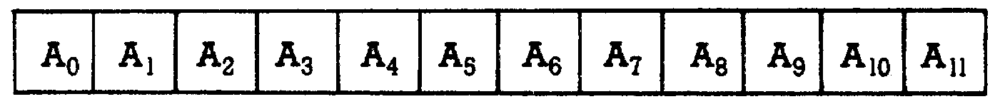
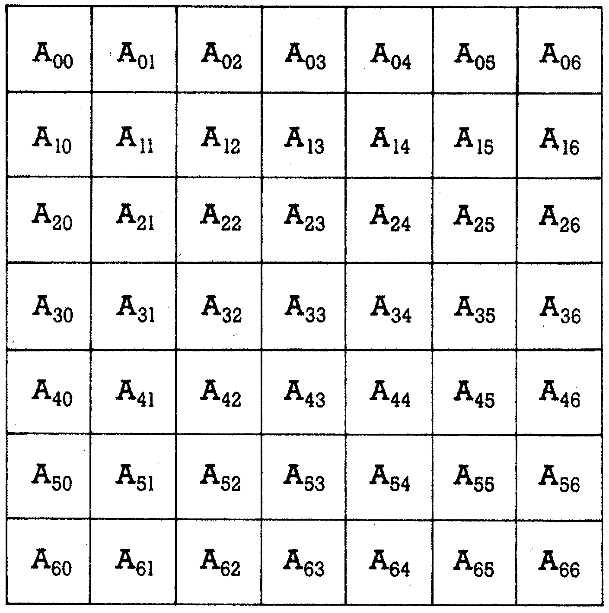
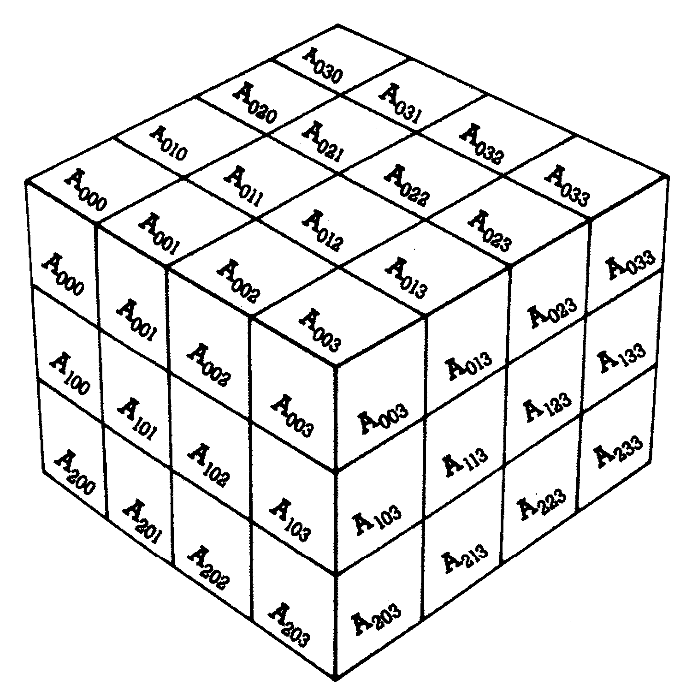
Die dritte Dimension
Theoretisch können im Commodore 64 sogar Arrays mit 256 Dimensionen definiert werden, solange der verfügbare Speicherplatz ausreicht. Einen Zeiger auf das Ende der Array-Liste finden wir in 49/50. Wenn Sie wieder in unserer Direkt-Eingabe das Ergebnisfeld löschen und dann für A den Wert 49 einsetzen, dann zeigt der Bildschirm wie vorhin: »10 8 2058«.
Weil wir kein Array verwendet haben, ist der Array-Ende-Zeiger mit dem Array-Beginn-Zeiger identisch. Etwas Neues erfahren wir, wenn wir für A nun mal 51 einsetzen. Es ergibt sich der Ausdruck: »0 160 40960«.
Diese Zahl kennen wir als die Startadresse des Basic-Interpreter-ROMs. Gleichzeitig haben wir hier das Ende des normalerweise verfügbaren Basic-Speicherraumes vor uns. 51/52 ist aber nicht etwa der Zeiger auf das Ende des Basic-Speichers. Vielmehr gibt dieser Vektor Auskunft über den Anfang des Stringspeichers. Das kann man leicht feststellen. Geben Sie doch mal ein: »A$ = "123456"«.
Dann löschen Sie das Ergebnisfeld unserer Direktzeile und fragen Sie erneut nach dem Inhalt des Vektors 51/52 durch Hochfahren des Cursors zur Direktzeile und Drücken von RETURN. Auf dem Bildschirm erscheint nun: »250 159 40954«.
Der Vektor ist jetzt sechs Speicherplätze weiter nach unten gerutscht, also für jedes Zeichen unseres Teststrings A$ um einen Speicherplatz. Wir sehen daran, daß Strings am oberen Ende unseres Basic-Speichers abgelegt und neue Strings von da an abwärts angehängt werden. 51/52 weist daher auf den jeweils aktuellen unteren Rand des Stringspeichers. Zwischen der durch 51/52 angezeigten Speicherposition und der durch 49/50 definierten Array-Obergrenze liegt freier Speicherraum. Beide Zeiger wandern im Verlauf eines Programmes mit vielen Variablen aufeinander zu. Wenn ihr Abstand eine gewisse Mindestgrenze erreicht, tritt die sogenannte Garbage-collection (zu deutsch Müll-Sammlung) ein. Nicht mehr benötigte Strings werden dabei (etwas vereinfacht) gelöscht und noch gültige soweit wie möglich nach oben gerückt. Dann klafft wieder freier Speicher zwischen String- und Array-Tabelle. Sollte aber irgendwann auch die Garbage-collection keinen freien Speicher mehr schaffen können, dann meldet der Computer einen »OUT OF MEMORY ERROR«.
Der Vektor 53/54 soll uns nicht belasten. Es handelt sich um einen Hilfszeiger zur Stringverarbeitung. Viel interessanter sind die Speicherplätze 55 und 56 für uns, die nun wirklich das Ende des verfügbaren Basic-Speichers enthalten. Steht die Direktzeile noch auf dem Bildschirm? Dann ersetzen Sie bitte den A-Wert durch 55 und – nach vorherigem Löschen des Ergebnisfeldes sowie einem RETURN in der Direktzeile – sehen Sie den Ausdruck: »0 160 40960«.
Insgesamt sehen Sie in Tabelle 2 eine Zusammenfassung der Namen, Speichernummern und Inhalte all dieser Vektoren im Einschaltzustand unseres Commodore 64. Bild 8 zeigt Ihnen den Basic-Speicher mit den Zeigern. Hier soll ein Programm im Speicher liegen. Wir können aber noch mehr tun, als nur diese Vektoren mit PEEK lesen. Hier liegt ja RAM vor, das durch POKE-Kommandos veränderbar ist.
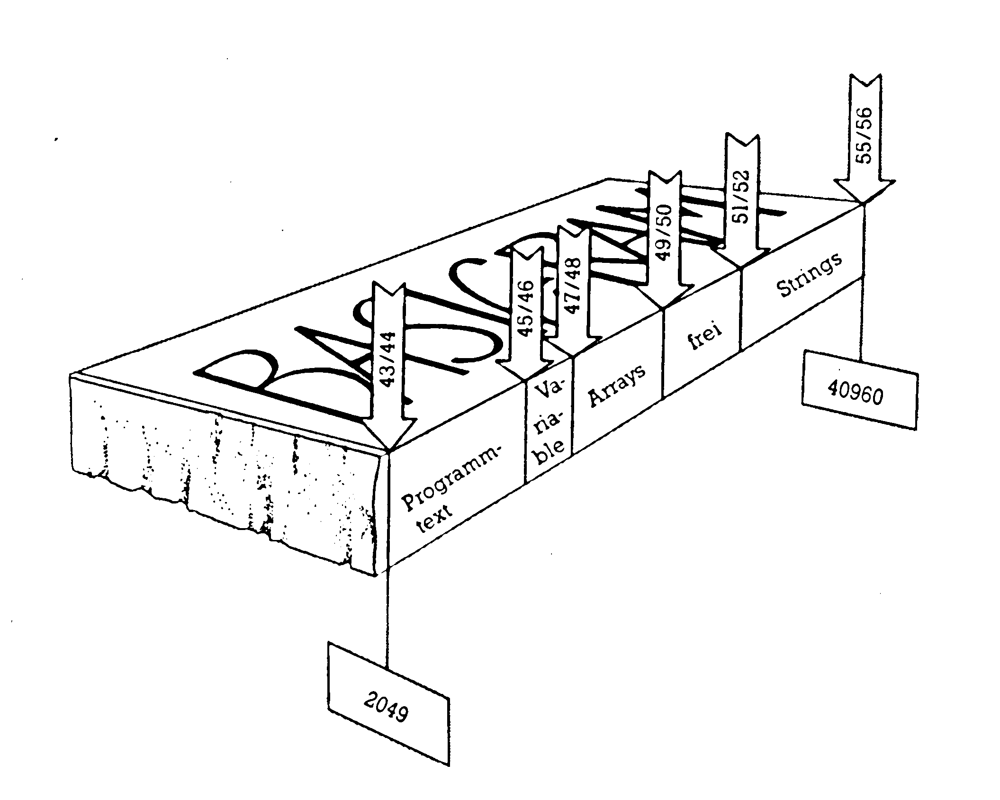
| Commodore-Name | Adresse | Normaler Inhalt | Bedeutung | |||
|---|---|---|---|---|---|---|
| LSB | MSB | LSB | MSB | Dezimal | ||
| TXTTAB | 43 | 44 | 1 | 8 | 2049 | Basic-Text-Anfang |
| VARTAB | 45 | 46 | 3 | 8 | 2051 | Variablen-Tabelle Anfang |
| ARYTAB | 47 | 48 | 3 | 8 | 2051 | Array-Tabelle Anfang |
| STREND | 49 | 50 | 3 | 8 | 2051 | Array-Tabelle Ende |
| FRETOP | 51 | 52 | 0 | 160 | 40960 | String-Tabelle Spitze |
| MEMSIZ | 55 | 56 | 0 | 160 | 40960 | Basic-Speicher-Ende |
Veränderungen am Basic-Speicher
Folgendes kann man am Basic-Speicher alles ändern:
1) Herabsetzen des Basic-Speicherendes
2) Heraufsetzen des Basic-Speicherbeginns
3) Mehrere Basic-Programme im Speicher gleichzeitig list- und lauffähig aufbewahren.
Die am häufigsten gestellte Aufgabe ist das Schützen des oberen Basic-Speicherbereichs vor dem Überschreiben durch Basic. Zwar bietet der Commodore 64 ab Speicherstelle 49152 (siehe Bild 2) einen 4 KByte großen Speicherraum, der für Maschinencode-Programme oder ähnliches recht gut geeignet ist, trotzdem muß man manchmal solche Programme auch in den Basic-Speicher legen. Beispielsweise fangen Modulprogramme meistens bei der Speicherstelle 32768 an, was mit einem besonderen Verhalten unseres Computers beim Einschalten, aber auch beim Reset, zusammenhängt.
Nehmen wir also an, wir möchten den Speicherraum ab 32768 schützen. Dann können wir uns zunächst der inzwischen schon bekannten Formeln bedienen:
MSB = INT(32768/256) = 128
LSB = 32768 - 256*128 = 0
Diese Werte müssen wir noch in den Vektor 55/56 schreiben. Normalerweise wäre noch eine Korrektur des Stringvektors notwendig, doch der NEW-Befehl erledigt das für uns. Also:
POKE 55,0:POKE 56,128:NEWDer POKE 55,0 kann auch weggelassen werden, da der LSB des Vektors meist sowieso auf Null steht.
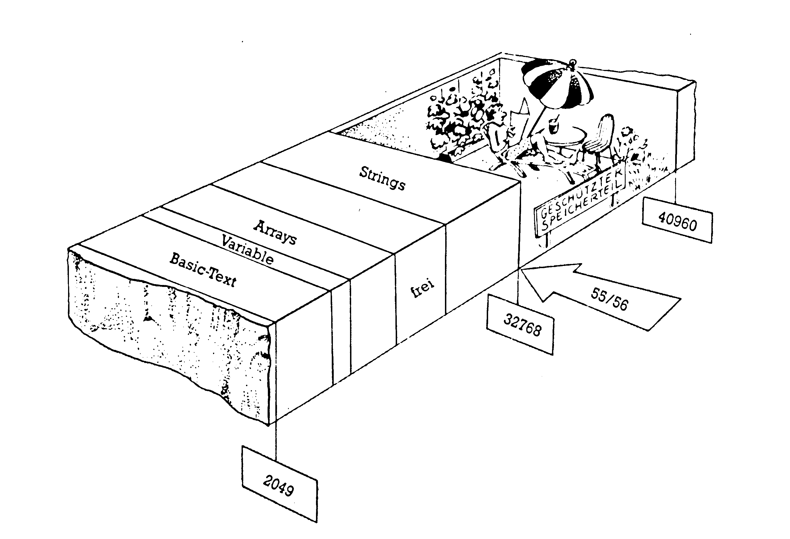
Prinzipiell gibt es zwei Möglichkeiten, die sich durch die Behandlung der Variablen unterscheiden (siehe dazu Bild 10 und Bild 11): Bei der ersten Variante werden die Programme relativ dicht hintereinander gelegt. Oberhalb des letzten Programms ist dann ein gemeinsamer Variablen-, Array- und Stringspeicher vorhanden. Das erreicht man so:
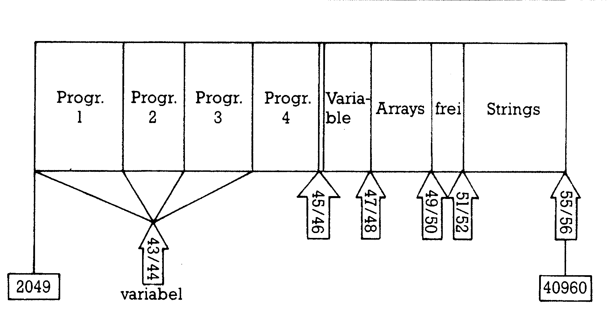
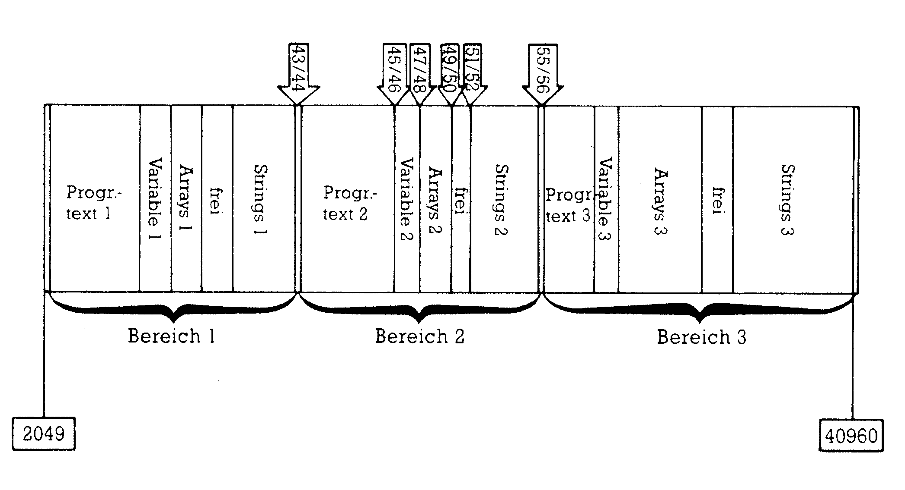
1) Einladen des ersten Programms und über den Vektor 45/46 feststellen, wo der Programmtext endet.
2) Die nächste volle Pageadresse wählen (diese müssen Sie sich unbedingt aufschreiben, sonst finden Sie Ihr Programm später nicht mehr) und – wie bereits beschrieben – eine Null einPOKEn, sowie den Basic-Anfang-Vektor auf diese Adresse +1 setzen.
3) Nächstes Programm laden und wieder wie in 1) und 2) geschildert verfahren, bis alle benötigten Programme im Speicher liegen.
4) Automatisch weist nun der Programmende-Vektor 45/46 auf das Ende des letzten Programms. Von dort an werden dann die Variablen und Arrays abgelegt.
5) Weil Sie glatte Pages als Startadressen gewählt haben, genügt es, zum Umschalten den jeweils dazugehörigen Wert aus Punkt 2 in Speicherstelle 44 zu POKEn.
Die Vorteile dieses Verfahrens liegen in der einfachen Umschaltung und der Tatsache, daß man so ziemlich viele Programme im Speicher halten kann. Von Nachteil ist es, daß nachträglich Änderungen eines Programmes sehr vorsichtig vorgenommen werden müssen, damit nicht das nachfolgende Programm überschrieben wird. Auch kann man nicht einzelne Programme speichern, sondern immer nur alle zugleich. Außerdem gibt es manchmal Situationen, in denen die gemeinsame Nutzung eines Variablenspeichers von Nachteil ist.
Die zweite Variante weist diese Mankos nicht auf, dafür verbraucht sie aber mehr Speicherplatz. Außerdem erfolgt die Umschaltung von Programm zu Programm wesentlich umständlicher. Hier müssen nämlich immer alle Vektoren von 43/44 bis 55/56 umgestellt werden.
Das Prinzip dieser zweiten Variante ist es, den Basic-Speicherraum jedes Programms mit seinen Variablen als allein vorhandenen Basic-Speicher zu definieren. Der Computer nimmt den gesamten anderen Bereich mit all seinen Inhalten nicht mehr wahr.
Hier nun die Erklärung des Listings 4: Nach dem Eintippen speichern Sie bitte das Programm erst einmal. Dann starten Sie es mit »RUN«. Der Basic-Lader schreibt nun das Maschinenprogramm aus den DATA-Zeilen in den Speicherbereich ab 49152, wo es gegen den Basic-Zugriff geschützt liegt. Nach der READY-Meldung können Sie durch »NEW« den Basic-Lader löschen; er wird nicht mehr benötigt.
Das Maschinencode-Programm wird durch »SYS 49401« gestartet. Davon merken Sie aber zunächst überhaupt nichts. Erst dann, wenn Sie im Direktmodus mal ein Pi eingeben, gefolgt von E oder S, wird das Programm tätig. Bevor Sie das tun, müssen Sie aber noch ein wenig Kopfarbeit leisten. Es ist nämlich nötig, zu überlegen, wieviel Speicherraum ein Programm inklusive seiner Variablen beanspruchen wird. Da sollte man nicht zu kleinlich sein, denn eine nachträgliche Änderung ist nicht mehr möglich. Wenn Sie diese Angabe parat haben, dann richten Sie zum Beispiel mit dem Kommando πE3000 einen Speicherbereich von 3000 Byte (minus 2) für Ihr erstes Programm ein. Diesem Bereich wird die laufende Nummer 1 zugeordnet. Mit weiteren πE-Kommandos können Sie nun – solange der Speichervorrat reicht – die Speicherbereiche 2, 3, und so weiter einrichten. Wenn Sie nun in einem bestimmten Speicherbereich arbeiten möchten, dann schalten Sie diesen ein, beispielsweise mit »πS1« den ersten Speicherbereich. Hier können Sie nun nach Herzenslust ein Programm laden oder schreiben oder auch nur eine Directory lesen oder Programme ändern (Sie müsen nur innerhalb des von Ihnen beim Einrichten gesetzten Limits bleiben). Soll es ein anderer Speicherbereich sein? Einfach mit »πS (Bereichsnummer)« umschalten! Ein gutes Mittel zur Orientierung hat C. Sauer in sein Programm noch eingebaut, welches ich mit übernommen habe. Die Orientierung kann nämlich spätestens nach Laden des dritten Programms schwer werden! Das Maschinencode-Programm druckt deshalb nach dem Umschalten in einen anderen Bereich die erste REM-Zeile des dort vorhandenen Programms aus. Man kann sich daher Orientierungshilfen in einer solchen REM-Zeile notieren, was sehr zu empfehlen ist!
Die Page 1
Für den Basic-Programmierer ist die Page 1 ganz flott abgehandelt: Da gibt es nämlich nichts Interessantes für ihn zu finden. Von Speicheradresse 256 bis 511 befindet sich der sogenannte Prozessorstack, der auch Stapelspeicher genannt wird. Ein Eingriff kann hier zu besonders eleganten Abstürzen führen. Dieser Prozessorstack und sein Inhalt ist eines der empfindlichsten Gebiete unseres Computers und nur sehr erfahrene Assembler-Programmierer können ihn ohne Scheu manipulieren. Aber das soll Sie nicht davon abhalten, Ihr Glück auch hier durch ein paar »POKEs« oder – wesentlich harmloser – PEEKs zu versuchen. Die Notbremse (Ausschalten des Computers) funktioniert ja immer.
(Heino Ponnath/tr)